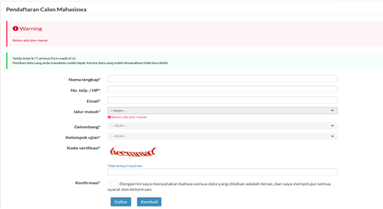

BIAYA PENDIDIKAN
- Biaya Uang Kuliah Tunggal (UKT) sesuai dengan Keputusan Rektor Nomor: 379/UN43/KP.TM.01.03/2020 tentang Penetapan Biaya Pendaftaran, Uang Kuliah Tunggal, dan Iuran Pembangunan Institusi Bagi Mahasiswa Baru Program Sarjana Jalur Seleksi Mandiri Masuk Perguruan Tinggi Negeri Wilayah Barat Universitas Sultan Ageng Tirtayasa Tahun Akademik 2022/2023, yaitu:
| No | Kode | Program Studi | K3 | K4 | K5 | K6 |
|---|---|---|---|---|---|---|
| 1. | 5501 | Akuntansi | 3.000.000,- | 4.000.000,- | 5.500.000,- | - |
| 2. | 5502 | Manajemen Pemasaran | 3.000.000,- | 4.000.000,- | 5.500.000,- | - |
| 3. | 5503 | Perpajakan | 3.000.000,- | 4.000.000,- | 5.500.000,- | - |
| 4. | 5504 | Perbankan dan Keungan | 3.000.000,- | 4.000.000,- | 5.500.000,- | - |
| 5. | 8801 | Keperawatan | 6.000.000,- | 6.500.000,- | 7.000.000,- | - |
| 6. | 5551 | Manajemen (S1) | 3.000.000,- | 4.500.000,- | 6.000.000,- | - |
| 7. | 5552 | Akuntansi (S1) | 3.000.000,- | 5.000.000,- | 6.500.000,- | 7.500.000,- |
Biaya yang harus dibayar di awal semester I = Biaya IPIN + UKT. Untuk semester selanjutnya yang dibayar hanya UKT.

TATA CARA PENDAFTARAN
Pendaftaran online dilakukan mulai:
22 Mei – 28 Juli 2023, pukul 16.30 WIB
Buka laman https://admisi.untirta.ac.id, Klik Daftar pada tanda yang ditunjuk panah merah.

Masukan data yang diminta dan pilihan program studi yang diinginkan. Pastikan data diisi dengan benar (no.HP/email) karena semua data akan mejadi acuan panitia dalam berkomunikasi atu mengirim notifikasi. Satu email hanya bisa dipakai untuk mendaftar satu kali.
Setelah memasukan kode verifikasi dan ceklis konfirmasi kemudian klik Daftar.

Peserta Program studi Diploma Tiga Ekonomi, dapat memilih maksimal dua program studi, sedangkan peserta Ahli Jenjang (S1), hanya diperbolehkan memilih satu jurusan, sesuai dengan linieritas ijazah diplomanya.
Peserta yang berminat memilih Diploma Tiga Keperawatan hanya satu pilihan.
Cetak Bukti Pendaftaran dan tunjukan ke petugas Teler Bank untuk pembayaran, atau bisa melakukan pembayaran dengan salah satu fasilitas Bank cek di sini
contoh :

Nomor Pendaftaran = Nomor Rekening/Nomor Tagihan.
Pembayaran pendaftaran dilakukan untuk mengaktifkan Nomor Pendaftaran (token) dan Password. Untuk Selanjutnya bisa digunakan untuk Login ke https://admisi.untirta.ac.id dan melengkapi data.
Setelah melakukan pembayaran, buka kembali laman https://admisi.untirta.ac.id kemudian pendaftar melakukan Login, dengan menggunakan Nomor Pendaftaran dan Password yang ada pada Bukti Pendaftaran.
Lengkapi Data dengan Benar dan Jujur, berikut dokumen yang harus dilengkapi :
File Pasfoto berwarna terbaru (standar untuk ijazah) dengan wajah menghadap ke depan, ukuran 4x6 cm, berformat *jpg, dengan resolusi maksimum 300pxl x 450pxl, dan ukuran file maksimum 200 kb.
Pakta Integritas Mahasiswa (download, cetak, isi, scan, dan upload).
Surat Pernyataan Mematuhi Peraturan dan Kesanggupan Membayar Biaya Pendidikan(download, cetak, isi, scan, dan upload).
Ijazah / Surat Keterangan Lulus bagi lulusan tahun 2023 yang belum memperoleh Ijazah. atau Surat Keterangan Kelas XII atau Kartu Peserta Ujian Sekolah (scan, upload)
Akta Kelahiran (scan dan upload).
Kartu Keluarga (scan dan upload).
Bukti pembayaran listrik bagi pelanggang pascabayar atau bukti pembelian token listrik bagi pelanggan prabayar (scan dan upload).
Pilih salah satu yang paling sesuai.
- SPPT Pajak Bumi dan Bangunan (PBB) tiga tahun terakhir (pilih salah satu)
- Surat Pernyataan tentang Luas Tanah dan Bangunan Rumah yang ditempati bagi yang tidak punya SPPT
- Jika Rumah Mengontrak dan tidak ada Bukti PBB lampirkan Bukti pembayaran sewa rumah bagi yang mengontrak/sewa ditambah Surat Pernyataan tentang Luas Tanah dan Bangunan Rumah yang ditempati
Untuk Kelompok Ujian Ekonomi dan Alih Jenjang (S1) Wajib Upload Surat Keterangan Sehat, Surat Hasil Test Narkoba dari Rumah Sakit Pemerintah / BNN.
Untuk Kelompok Ujian Keperawatan akan melakukan tes kesehatan di lokasi Tes sesuai jadwal.
Bukti Penghasilan Ayah dan Penghasilan Ibu dengan ketentuan sebagai berikut (scan dan upload):
PNS/TNI/BUMN/Karyawan Swasta : Slip Gaji / Bukti Penghasilan maksimal 2 (dua) bulan terakhir tahun 2023 (terbaru),
Wiraswasta/Petani/Pedagang/Buruh/Tidak Mempunyai Pekerjaan Tetap : Surat Keterangan Penghasilan dari Kelurahan dengan wajib mencantumkan (1) NAMA PEKERJAAN (2) NOMINAL PENGHASILAN/bulan (scan dan upload),
Pensiunan : Rekening Koran atau print out Buku Rekening Pensiun maksimal 2 (dua) bulan terakhir tahun 2023 (terbaru).
Jika Ayah sudah meninggal kolom penghasilan di isi nol. Dokumen yang di upload Surat Kematian.
Jika Ibu ibu Rumah Tangga minta surat keterangan dari RW/Kelurahan
Penghasilan Ayah dan Ibu di isi dengan data sebenarnya dan tidak boleh 0 (nol) semua.
Pertanyaan / Isian yang bertanda bintang (*) wajib di isi, sedangkan untuk pertanyaan yang tidak ada tanda bintang bisa di isi jika anda mempunyai datanya atau boleh dikosongkan.